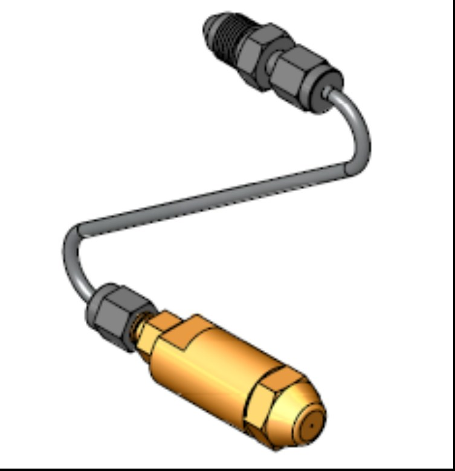
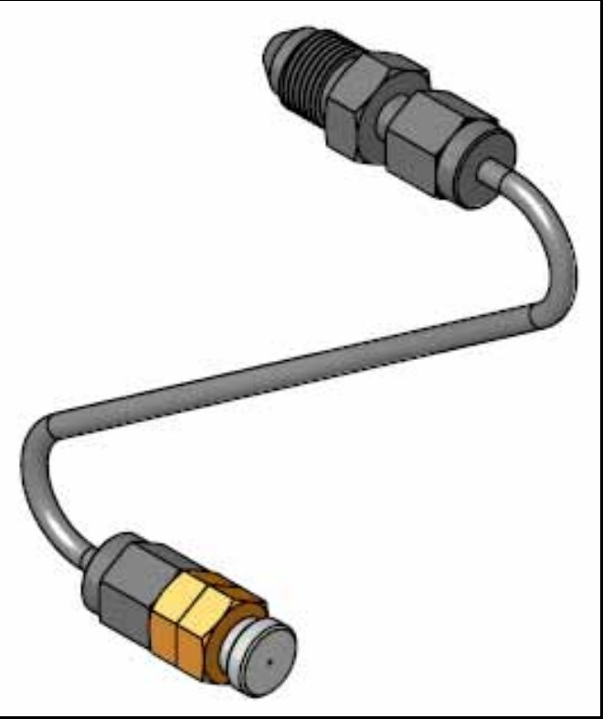

Doc no. MOC-TSB-11-01 // Vol. 11 No. 01 // Feb 16, 2011 // Fuel
Air Intake System Cleaning "S" Tool
7410075450
Due to a request from service technicians, MOC has reintroduced the Air Intake System Cleaning "S" Tool (Part No. 74100). This tool was previously replaced by a newly designed "S" Tool (Part No. 75450). MOC customers will now have a choice of two different "S" Tools. Both items are currently in stock.
What's new
MOC# 74100 MOC# 75450 The "S" Tool (Part No. 75450) design has been improved by securing the tip with Loctite® to prevent it from coming loose during a service.
Contact
For more information, contact the Machine & Equipment Department at 866.244.6621.


Part numbers
| Part No. | Description | Notes |
|---|---|---|
| 74100 | Air Intake System Cleaning "S" Tool | |
| 75450 | Newly designed "S" Tool |